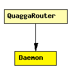

File: Network/Quagga/Daemon.ned
(no description)
The following diagram shows usage relationships between modules, networks and channels. Unresolved module (and channel) types are missing from the diagram. Click here to see the full picture.
If a module type shows up more than once, that means it has been defined in more than one NED file.
| QuaggaRouter | Quagga-based IP router. |
| Name | Type | Description |
|---|---|---|
| fsroot | string | |
| server | string |
| Name | Direction | Description |
|---|---|---|
| tcpIn | input | |
| tcpOut | output | |
| udpIn | input | |
| udpOut | output | |
| ipIn | input | |
| ipOut | output |
simple Daemon parameters: fsroot : string, server : string; gates: in: tcpIn; out: tcpOut; in: udpIn; out: udpOut; in: ipIn; out: ipOut; endsimple